| 日付 | 2017年11月5日（日） |
|---|---|
| 山域 | 西上州 |
| メンバー | 家族（妻、長女・6歳、長男・4歳） |
| 山行形態 | 子連れ日帰り |
| アクセス | 車 |
| ルート (Map) | 林道終点 (8:21) - (9:42) 展望台 (9:48) - (9:57) 西峰 (10:04) - (10:25) 桧沢岳 (11:13) - (12:45) 渡渉点 (13:14) - (13:35) 林道終点 |
快晴の日曜日のため、一昨日に引き続き山に行くことにする。
どの山に行くかはいろいろ迷ったが、気温が下がって風も強い
という予報が出ていたため、低山の桧沢岳に行くことにする。
今年の春以来の西上州の山だ。
林道終点に車を停める。標高730m。
何も考えず林道終点まで来てしまったが、私有地で車を停めてはいけない
場所だったかもしれない…
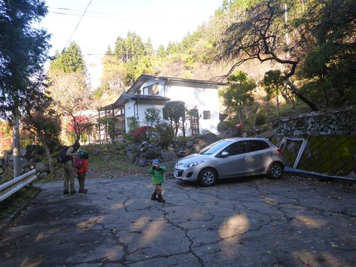
民家のすぐ前を通っていく。こんな登山道はありなのか？
民家はもう人が住んでいないように見える。
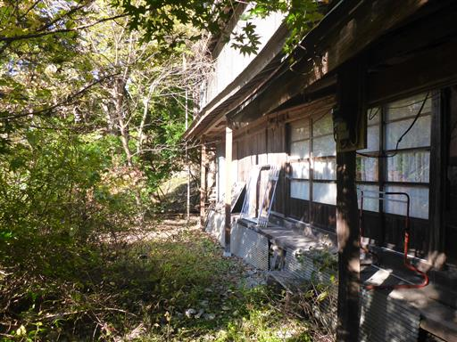
民家を抜けると発泡スチロールの道標がぶら下がっている。
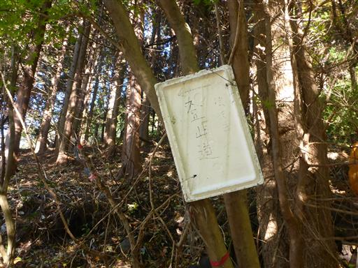
しかしその後、登山道を見失ってしまう。
変な方向に迷い込んでしまい、登山開始直後から暗雲が立ち込める。
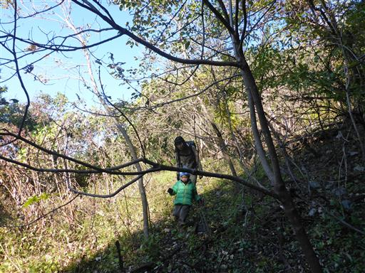
ようやく杉林の中に登山道を発見し、正規ルートに復帰。
しばらく登ると道ははっきりしてくる。
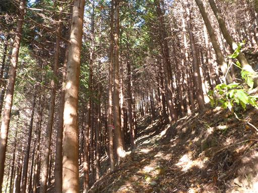
植林地帯を抜けると紅葉に包まれた登山道になる。
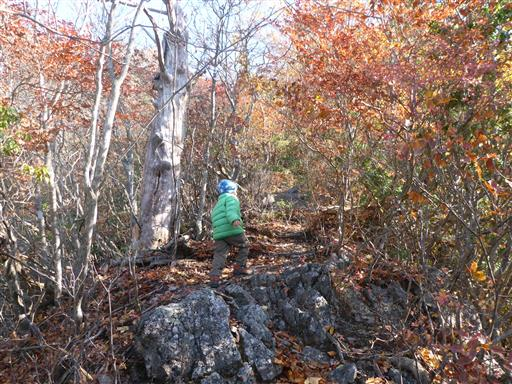
痩せ尾根直登の急斜面登山道でお世辞にも歩きやすいとは言えない。
いかにも西上州の登山道だ。
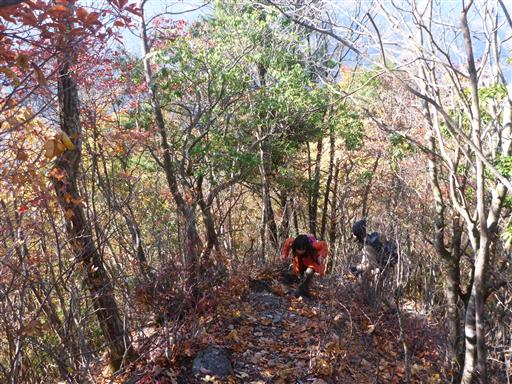
サルノコシカケ。巨大なキノコだ。
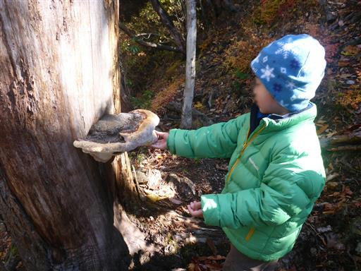
足元の紅葉が美しい。
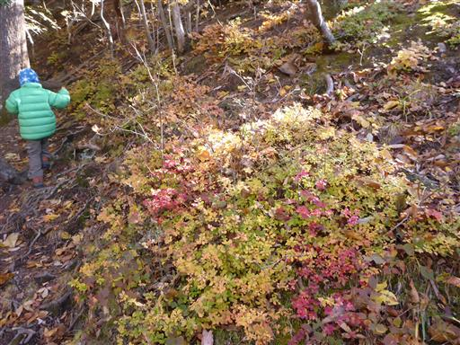
展望台に到着。本日初めての展望が広がる。
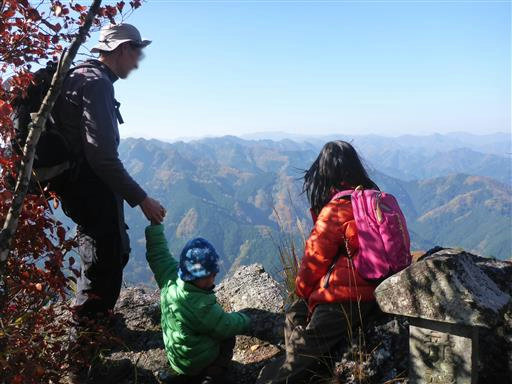
目の前に広がるのは西上州の山々。
眼下には紅葉に彩られた尾根が見える。
高山の鮮やかな紅葉とは異なるが、このような素朴な紅葉も良いものだ。
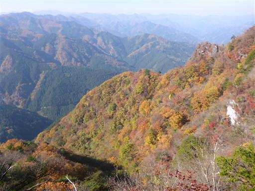
見上げると立派な岩峰が聳え立っている。
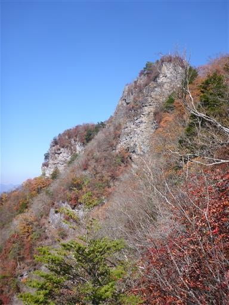
展望を満喫したら山頂目指して登って行く。
茶色一色ではあるが、足元も頭上も紅葉に彩られている。
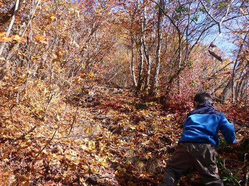
巨大な岩に突き当たる。ここは左から巻いて登っていく。
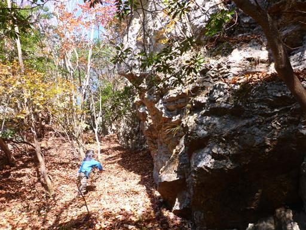
登山道がだんだんと険しくなってくる。一筋縄ではいかない山だ。
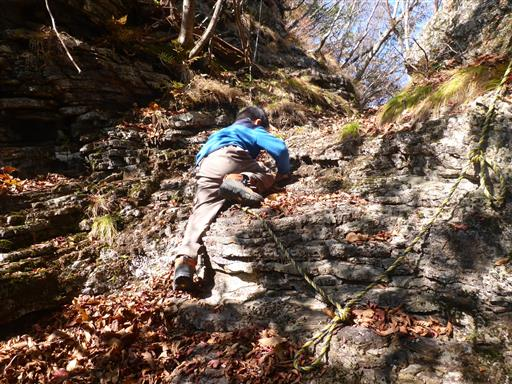
コルに到着する。見上げると岩壁、見下ろすと断崖…
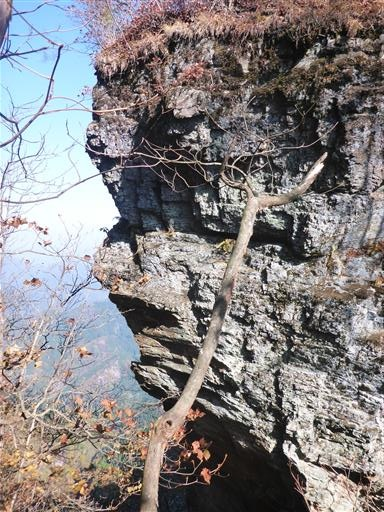
ここから急斜面を手と足をフル動員して登って行く。
手で捕まれる場所が少なく、足元は滑りやすいので嫌らしいところだ。
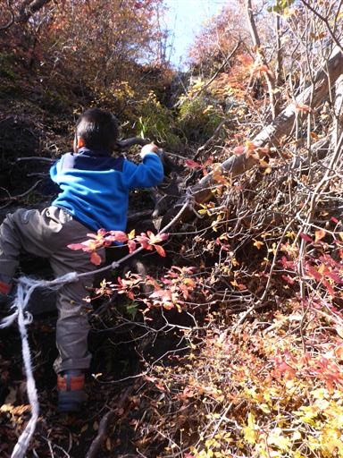
たどり着いたのは桧沢岳西峰の展望台。ここからも素晴らしい展望が広がる。
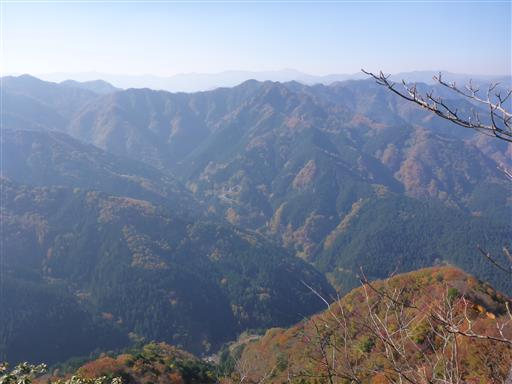
息子は祠に奉納されている剣を見つけて喜んでいる。
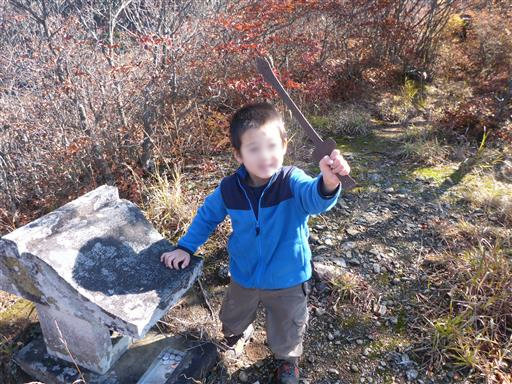
崖の縁から眼下を見下ろす。怖くないのだろうか？
全く信頼できないので繋いだ手は離せない。
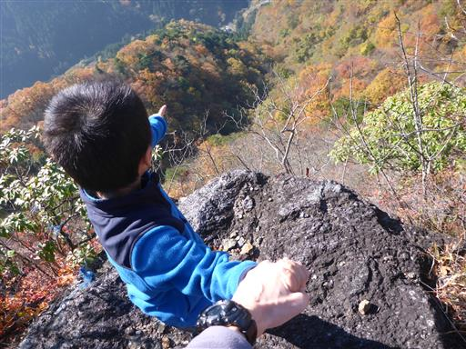
来た道の反対方向には目指す桧沢岳の山頂部が見えている。
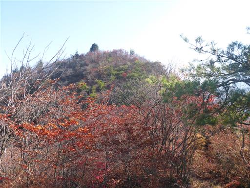
一旦コルまで下って、桧沢岳に向かって登り始める。
この登り始めの岩場が何とも嫌らしい。
すぐ下は崖、狭い岩場のため息子を下からサポートすることもできない。
ちょっと勘弁してほしい岩場だ。
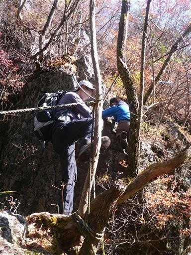
息子の手を掴みながら何とかクリア。
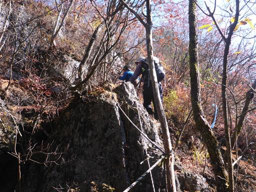
娘は息子よりは安心できるため、一人で通過。
しかしあまり心臓によろしくない場所だ。
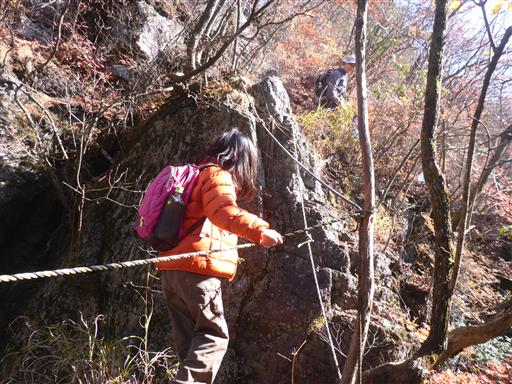
岩場を超えたらその後は急斜面のトラバース道、その後は急斜面の登り。
全体的に難易度が高く、全く楽をさせてくれない登山道だ。
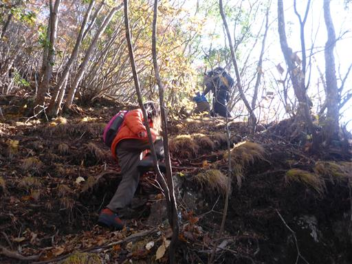
ようやく桧沢岳山頂に到着する。標高1133m。
山頂は非常に狭く、岩峰なのに展望は全く無い。
とりあえず腰を下ろして昼食タイムにする。
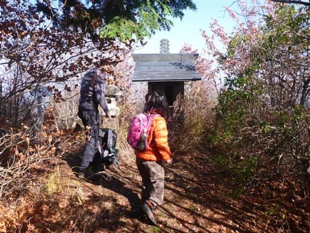
山頂には立派な祠がある。賽銭を入れて手を合わせる。
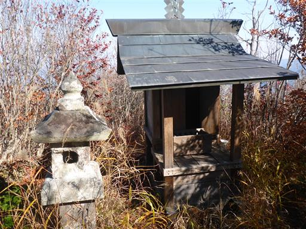
今回の山行は周回コース。祠の裏に続く道を下っていく。
こちらの道も踏み跡が薄くて分かりにくい。
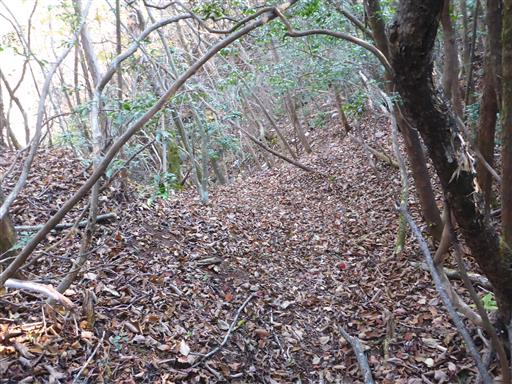
巨大な岩壁の下に出てくる。
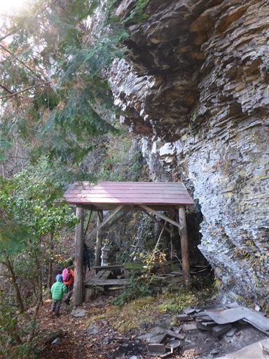
岩壁の穴の開いた部分にも祠が祀らている。桧沢岳神社と書かれている。
こんな険しい山中でも日常的にお参りされているのだろうか？
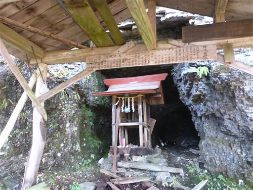
不明瞭な登山道は続く。本当に道が合っているのか不安になってくる。
この辺りは岩がちな地形でかなりの痩せ尾根だ。
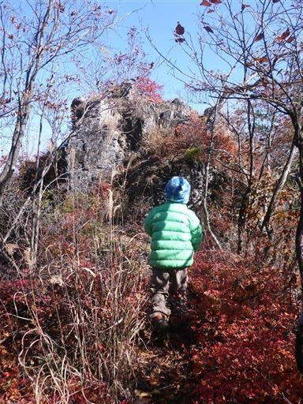
眼下には目も眩むような絶壁が見える。
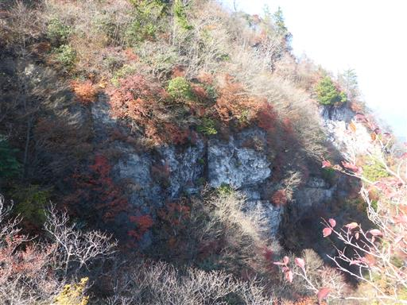
少し鮮やかな紅葉。ほっと一息だ。
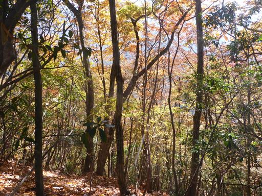
しかしマニアックな登山道は続く。
息子とはほとんど手を繋ぎっぱなしで、細い登山道はかなり歩きにくい。
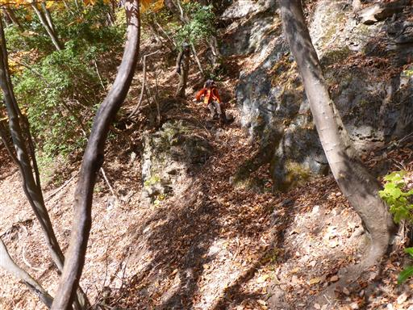
植林地帯に到着。歩きやすい道になって、ようやく息子は一人で歩けるようになる。
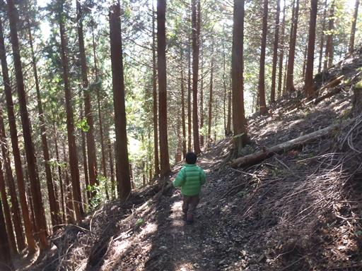
小さな沢に下りてくる。ここでおやつ休憩をとることにする。
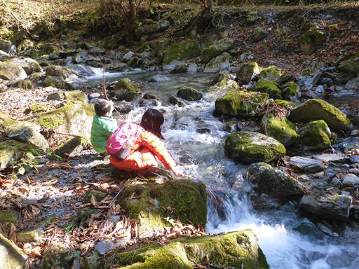
子供たちは木の棒を突っ込んで魚釣りの真似をしたり、石を投げ入れたりして遊んでいる。
周囲に人影はないので思いっきり遊べる。
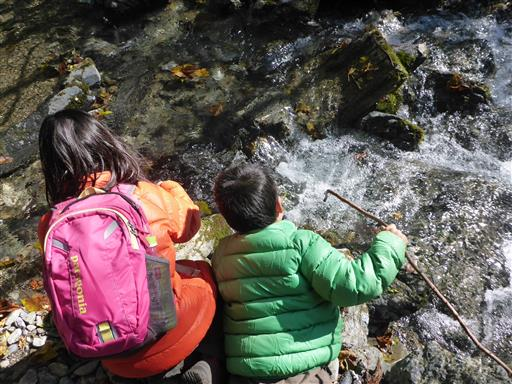
娘は川を渡る練習。一度成功すると、楽しくて何度も往復している。
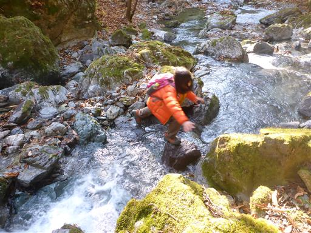
岩の上に大きな木の根っこが乗っかっている。
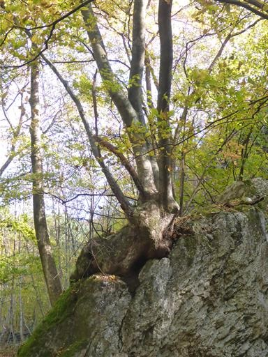
一通り遊んだらあとは車道を歩くのみだ。
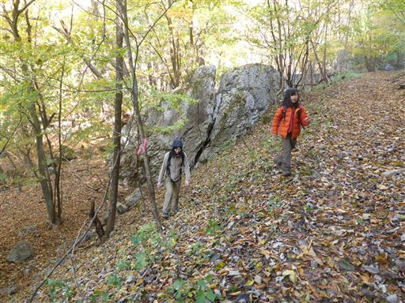
この車道は水が流れて、川みたいになっていて歩きにくい。
最後まで楽をさせてくれない山だ。
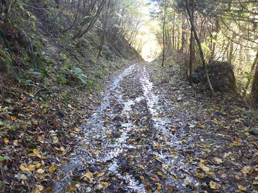
見上げると頭上に岩峰が見えている。あの辺りを歩いたのだろうか？
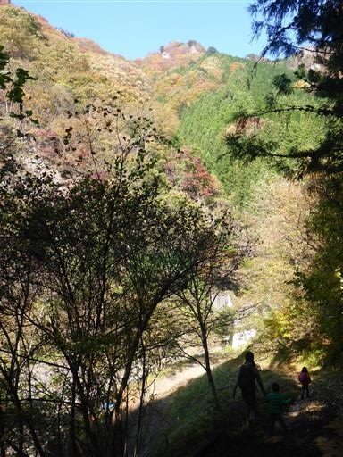
駐車場に到着。息子は山で拾った木の実を選別している。
桧沢岳は登山道が分かりにくく、歩きにくく、いかにも西上州らしい山で
幼児連れで来るには少々厳しい山だった。
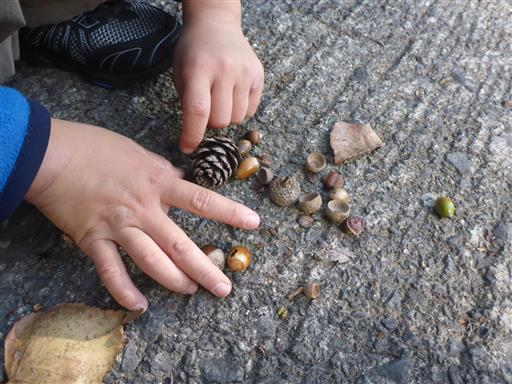